前言
这是这么近那么美，周末到河北的流水账下半段！
市区玩一天就差不多了。看了各种小红书觉得从邯郸站坐火车去响堂山石窟是个不错的方案。
之前本来是想包车去的，问了一个要￥250/人，路线是北响堂石窟-南响堂石窟-玉皇阁-北朝考古博物馆-邺城考古博物馆，价格不菲且有点赶，想了想还是自己 DIY 吧，顺便把行程路线抄了🤪，邺城考古博物馆有点远，且看着里面都是佛像，跟响堂山石窟有些同质化，就下次一定了。
正文
5.25
07:11 邯郸站
打车去邯郸站，￥10.55。
07:15 神秘火车🤩
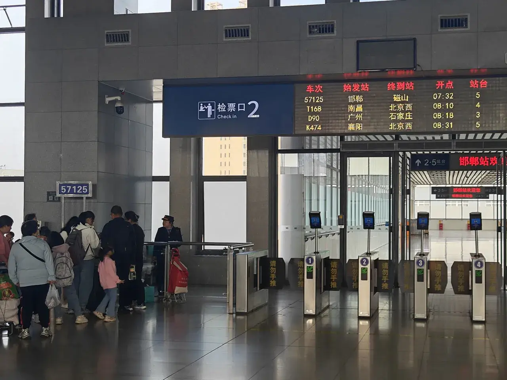
之前看小红书说，邯郸站有一辆神秘的 57125 号列车，在 12306 上都买不到票，要进站直接跟工作人员说坐这班车，就会放你进站🤔，试了下还真好使，感觉自己跟个秘密特工似的。
据说这个列车是给矿区工人通勤用的，现在才开放了其他人坐。
07:26 上车！
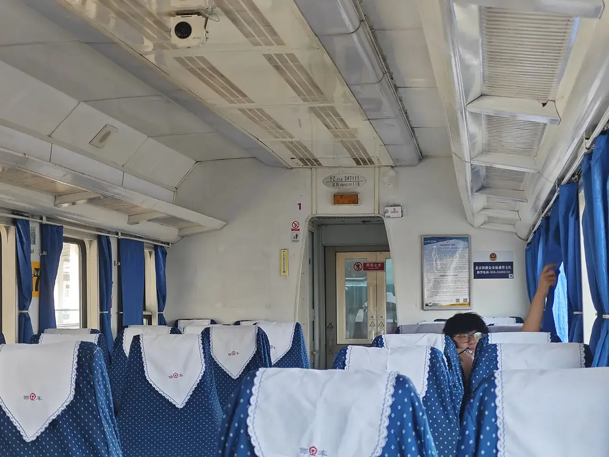
当世界在提速，北国的温情藏在 25 公里的时速里🚂。一辆消失在 12306 的便民列车、东风 4 内燃机车头和三节北车 YZ25G 车厢轰鸣着穿田而过，往返于邯郸市区与峰峰矿区之间，一间间即上即下的乘降所串联起村镇的劳作起居。
这个攻略的文字写得太好了😭，摘抄一下，可惜俺没得这样的文采。
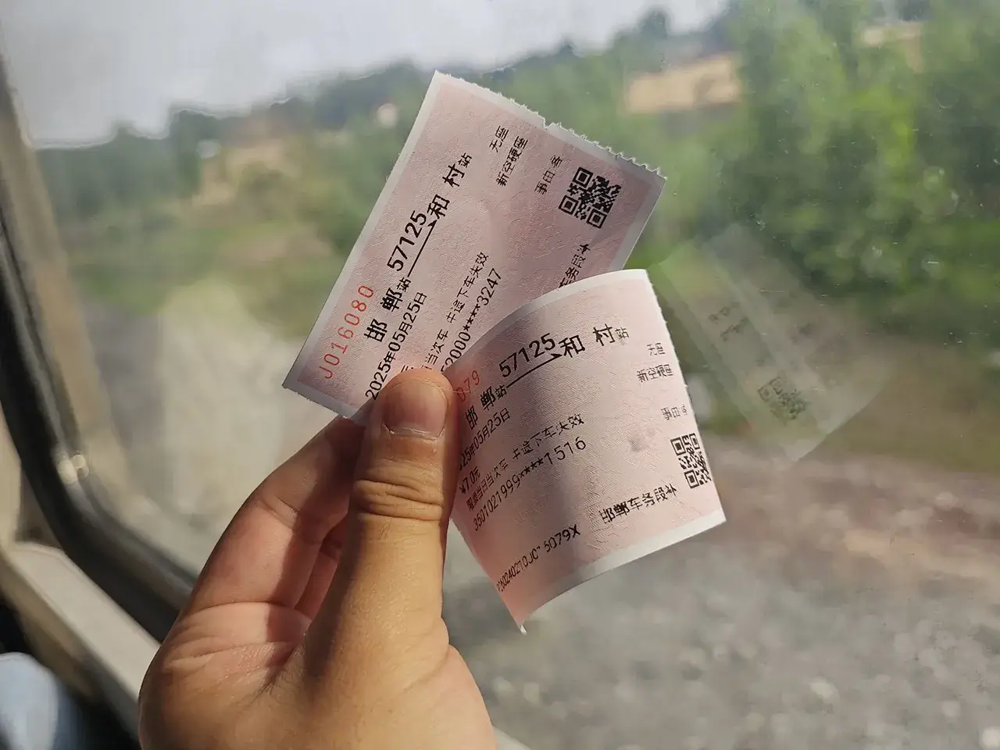
攻略上是先去南响堂的，要从新市区站下，俺想先去北响堂，就从和村站下，￥7/人，还只能在车上用现金付，太有历史感了😬。
-
57125：
-
07:32 邯郸
-
08:00 七公里
-
08:10 新坡
-
08:23 临水
-
08:32 新市区
-
08:39 彭城
-
09:00 义井
-
09:12 和村
-
09:26 磁山
-
08:13 河北农村
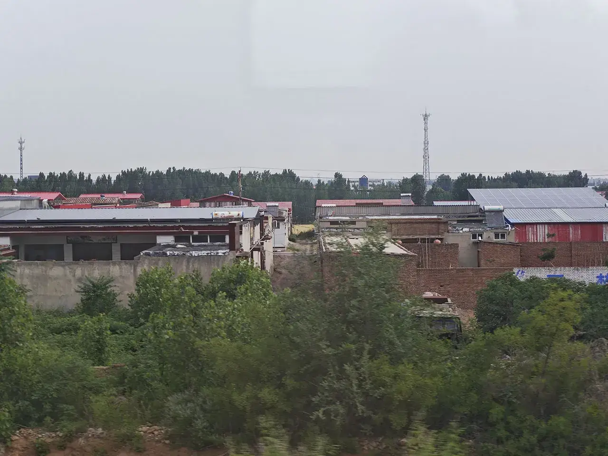
一路上窗外能看到田地、牛圈、猪圈还有工厂，真是太有风味了！
08:26 雾霾制造机
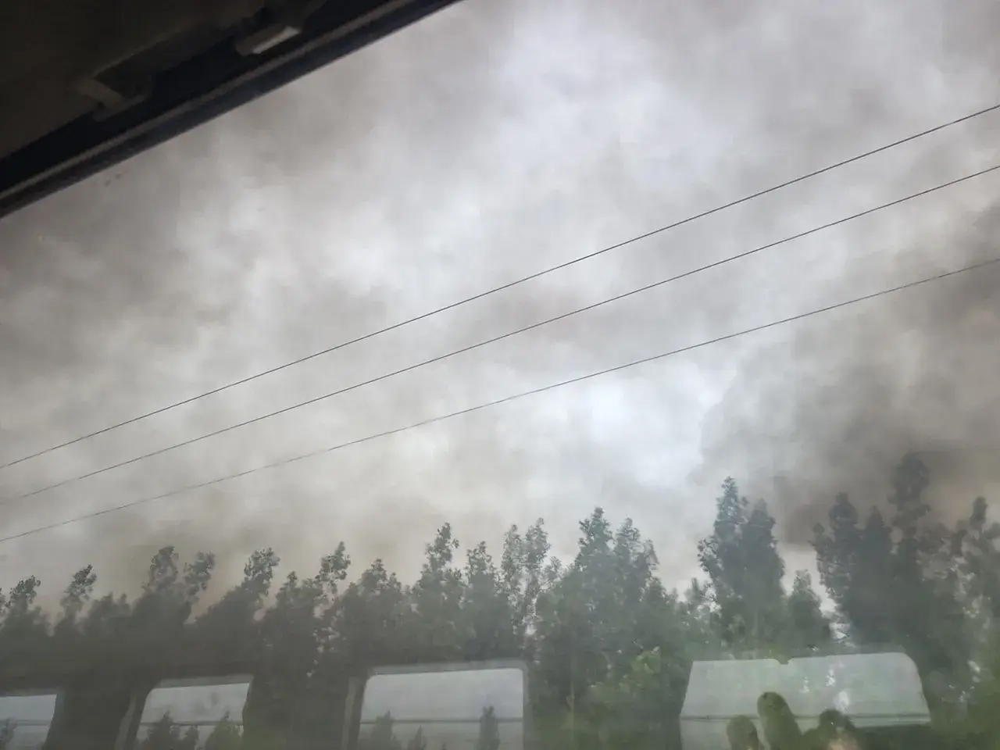
以为这个车会况且况且地很晃，但其实挺平稳的。
2025 年了居然还能看到冒黑烟的火车🤧！
08:42 神秘古塔
新市区站下去一堆人，到这里基本上就是空车了。
窗外被一个古塔吸引，后来还会再见的！
09:08 太行八径之滏口陉

看惯了河北的那么多平原，又要见到山了。
要是能早点来过这些地方就不愁小时候史地政学得稀烂了😭。
09:17 神秘车站
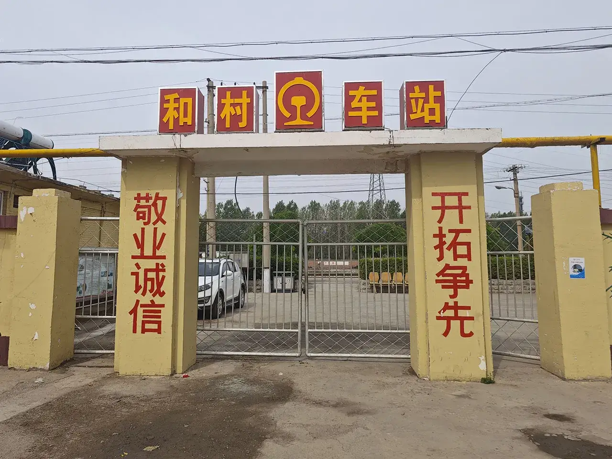
这是我见到的比正定站还破的车站了😵。
跟同行下车的人问了一嘴，他们要直接步行去 4 公里远的北响堂山，真是太特种兵了！后面听出租车司机说这些人可能是从后山绕过去逃票的。
09:19 神秘大爷
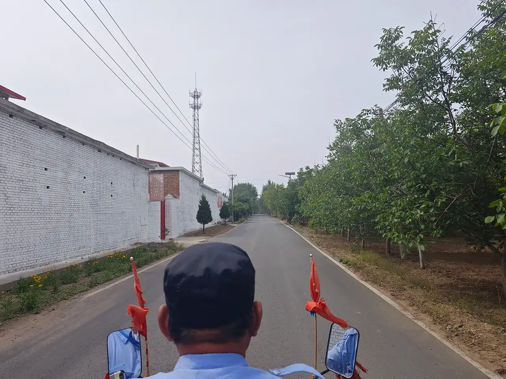
小红书所说会有个拉三轮车的大爷可以直接去北响堂门口，笑死还真有。￥10/人。最困难的去北响堂的交通问题解决了。
大爷说下午还可以再拉我们回车站，先留个电话再说，其实按计划是直接打车溜了。
09:31 北 · 响堂石窟🤩
北朝时期，邯郸人民老惨了，于是他们就开始信仰佛教以求解脱😭！于是就有了响堂山石窟了！
之前查过北响堂石窟￥60，南响堂石窟￥15，共计￥75，购买邯郸文旅一卡通￥88 可以免票，还可以免费去一些虽然我不会去的地方。
结果我没有算到北响堂石窟涨价了￥80😭。那这么算就还是购买邯郸文旅一卡通划算了，可惜它得提前一天开通。其实也还好，满城汉墓里啥也没有都要￥70 来着。
从山脚往上看就能看到石窟在哪，山顶好像也有个庙，但是没路给你走上去。
09:39 拈花坛
响堂山石窟或称响堂寺石窟位于河北省邯郸市峰峰矿区鼓山，分为北响堂、南响堂及小响堂（水浴寺）。南响堂在鼓山南麓，滏阳河北岸的临水镇纸坊村西北，北响堂在和村东的鼓山天鼓峰西坡，两地相距约 15 公里。现存北响堂 8 窟，南响堂 7 窟，小响堂 2 窟，共计造像 4,000 余尊，并有北齐石刻佛经。响堂山石窟是河北省现已发现的最大的石窟。1961 年被列入国务院第一批公布的全国重点文物保护单位。
就是从这里上山了！爬鼓山但是是邯郸的鼓山😇。
09:54 常乐寺遗址
常乐寺系列
这就是那个邯郸市博物馆里出土的那个人像的常乐寺了！然而里面在维修中😭（就这也要门票涨价），隐约地看到里面的佛像都被斩首了。
这个塔是北宋时期的！名胜古迹一点也不比 pro 哥的山西差😭！
10:09 财神殿
新修的财神殿
里面不让拍照，不拍了。
10:13 继续上山
巍峨太行
不去坐大巴是对的，这个山没有爬多久。
啊！河北邯郸！今天全是雾霾😭！
10:24 石窟景区
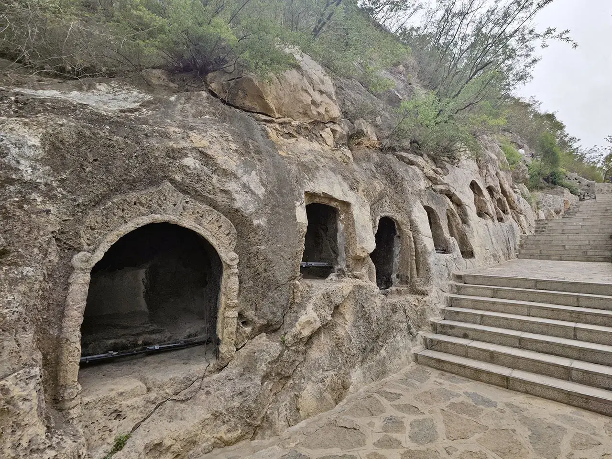
这里的佛像都被偷光光咯😭。但是外面还能隐约地看到飞天。
检票处
到了！检票进门！
10:29 石窟系列
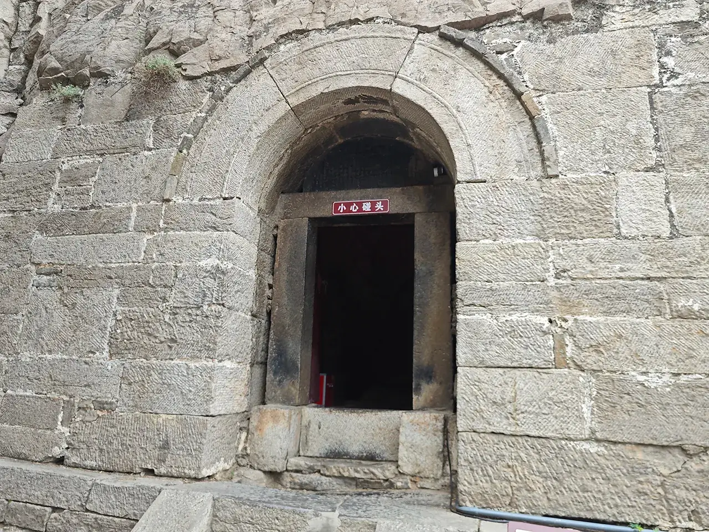
只顾着进窟拍照了，没注意拍外面的石窟是长啥样的😭，就只拍了这一张。
阿弥陀佛系列
里面特别暗，拿着手机看曝光还会好一点。
10:35 大佛洞
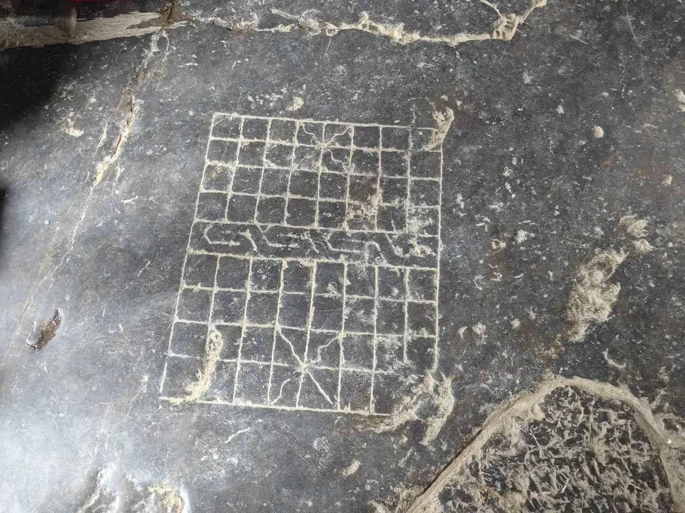
大佛洞是在北齐年间开凿，但是后来也有继续开凿的佛像。
大佛洞的地板上还有个象棋棋盘，不知道是古人刻的还是现在人刻的，看了下还真能下😬。
这是最牛逼的了！
保护得不是很好，大佛像上面都有鸟筑巢了😬。
祇今尚有清流月，曾照高王万马过
据《资治通鉴》所说，北齐神武帝高欢就埋在上面这个窟窿里！
高手位
再拍俩高手位，撤！
10:33 大业洞
大业洞
隋炀帝时期凿的洞，年代估计是根据碑文上的信息得出的。
10:57 下山咯！
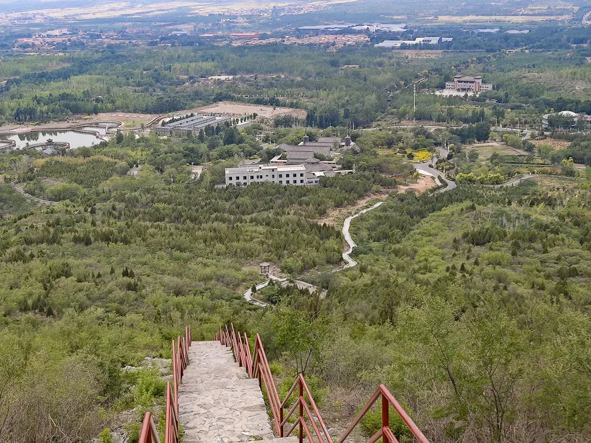
下山。本来想去看响堂寺的，但是到了门口觉得就是个新的建筑没啥意思，为了节省体力就下次一定。
11:12 邯郸特色小吃
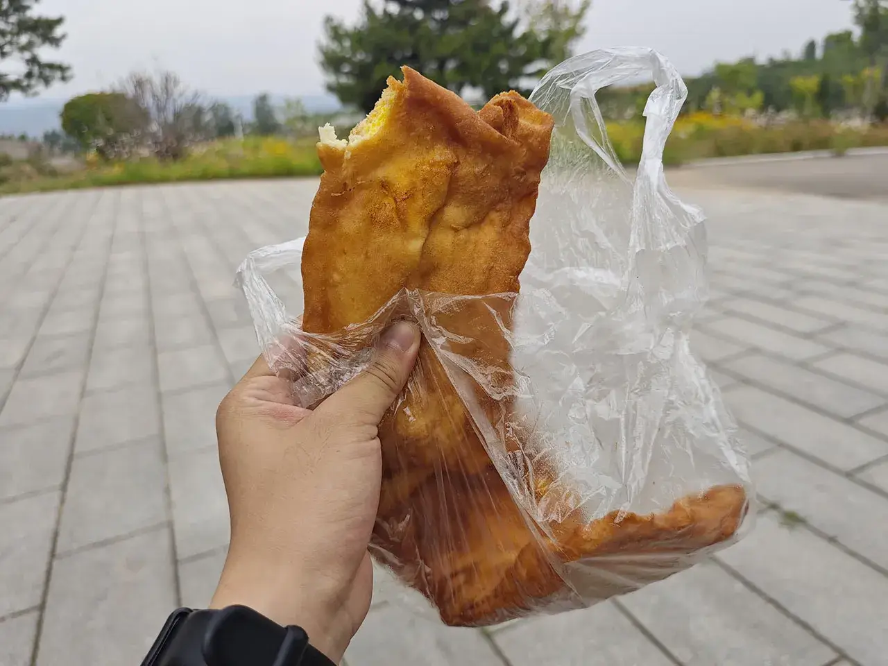
吃一下早上买的邯郸特色小吃——布袋！就是油饼炸之前灌了俩鸡蛋做成的。
11:34 助力文物回家！
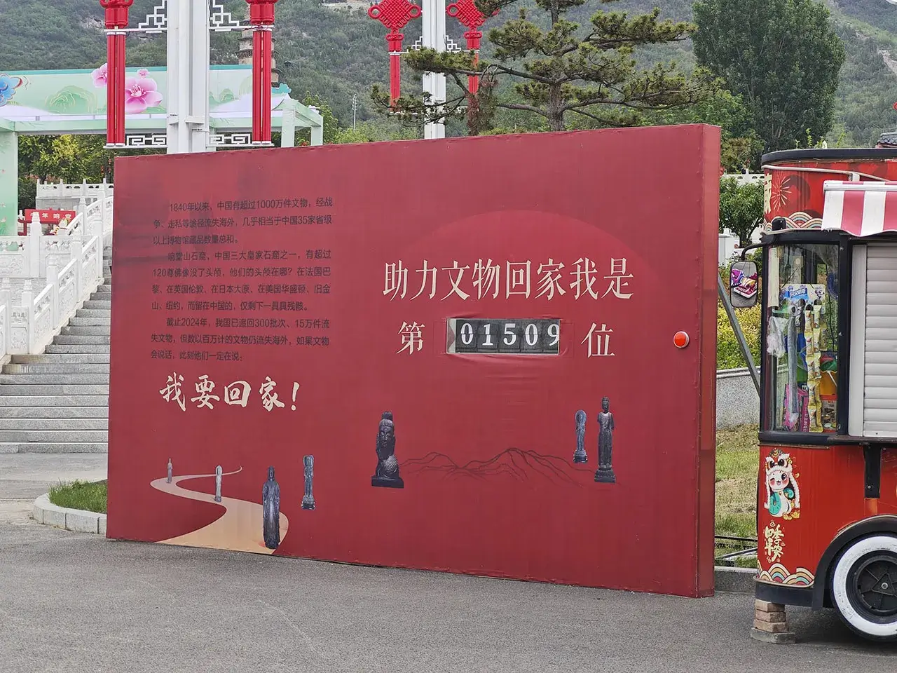
民国时期，北响堂山盗凿严重，所以很多佛头都被斩首了😠！按下右边的红色按钮助力文物回家！
12:00 磁州窑主题浮雕群🤩

越过狂沙越山丘~丝绸路上莫停留~
这是一个计划之外的地方。本来直接想打车去南响堂山石窟的，￥33.16。结果刚上车司机说不小心又接了一个顺风车🥱，说能不能再拼一下，我太好说话了就同意了。听我口音说我是外地人，我说是我是南方的。
后面上来了个洛阳来的，结果司机跟她说我也是河南的（河北人认为南方人就是河南的吗？）😅，然后一路上就开始唠嗑，洛阳的看我是南方小土豆就说有空可以来龙门石窟玩~司机说邯郸好啊因为之前蒙曼发了点视频，好多外地人都来这边玩。到半路说这边有个磁州窑的主题浮雕墙，就在附近可以拐一下看看，不然错过太可惜了，于是就在车上看了下这个墙。
大致就是说磁州窑当时非常厉害，畅销海外。
司机还说了可以去吃峰峰特色三下锅，我看了下河北经典大锅炖，下次一定！
12:18 南 · 响堂石窟🤩
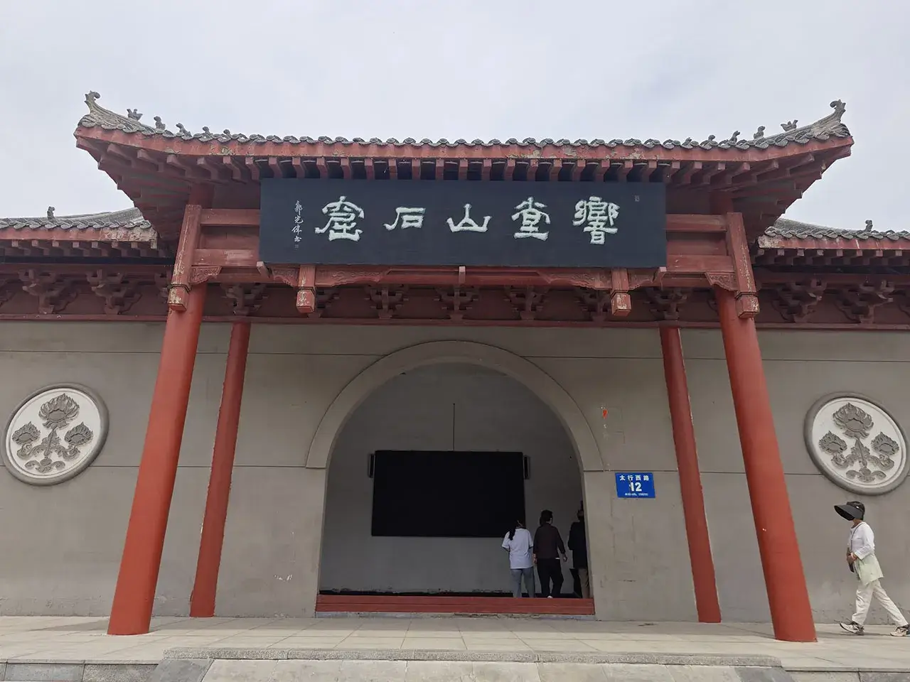
南响堂山石窟离峰峰矿区的市区近了许多。就在山脚下不用爬山。不比于北响堂山石窟是皇家的，规模也小得多，所以门票也便宜。
12:23 响堂山石窟博物馆

拓片、佛像和瓦当
展示了将响堂山石窟碑文制成的拓片、保护起来的佛像以及一些瓦当（看着还有外地的）。
12:34 宋塔
塔
又看到了在窗外所见的神秘古塔了！往塔里瞄了一眼，里面写着供奉黑白仙姑之位。
12:38 神秘古建
神秘古建
典型的北方建筑风格。
12:40 石窟系列
空空荡荡
南响堂里的佛像更是被毁坏严重了😭！
13:01 玉皇阁🤩
玉皇阁系列
从南响堂出来不到 500 米还有一个明代的玉皇阁，上去转了一圈。
玉皇阁的一大特色是里面的阁楼式没有梁的，俺没有建筑知识没注意去看😭！
13:53 北朝考古博物馆🤩
博物馆大门
打车去北朝考古博物馆，￥26.85，太远了干困了。
去这个博物馆前面是一个 T 字形路，但是双黄线不能转过去得开到尽头再掉头😅，这愚蠢的交通规划。去这么偏的地方估计把司机整无语了还问我们是不是学历史的为啥要来这😇，俺们可是无趣的工科青年。
又看到了在中考古博物馆里的骆驼咯！
14:00 走向隋唐——东魏 北齐文化艺术集萃
大厅
这个博物馆的遍历方式是列表的形式而不是一般的树状式（不知道咋描述，用计算机的概念类比了😅）。
汉唐之间近四百年的历史，除了西晋王朝短暂的统一外，中国疆土长期分裂成南北两部分。公元五世纪上半叶北魏王朝统一北方，历经北魏以及北魏分裂之后的东魏西魏、北齐北周等王朝，史称北朝，北朝的历史持续二百余年。
北魏是在东北活动的拓跋鲜卑部逐渐南下建立的王朝，杰出的政治家冯太后与孝文帝积极学习汉族文化，推行汉族政治制度，并将都城由平城南迁至洛阳，大力推广汉化过程。至六世纪东魏、西魏王朝建立之时,汉文化向北方各游牧民族的传播达到前所未有的广度和深度，社会经济与文化发展到一个新的阶段，洛阳、邺城地区的北朝考古成果充分反映了这一史实。
继北周灭北齐之后，杨坚在长安取代了北周，接着灭掉了定都建康的南陈，结束了中国长期南北分裂的局面，建立了统一中华的隋朝。隋及此后的唐王朝深受北朝政制度、文化艺术的影响，以邺城为中心的东魏、北齐正是隋唐制度形成最为重要的渊源之一，北朝时期的民族融合与文化交流为开创隋唐盛世奠定了坚实的基础。
东魏和北齐是后三国时代里经济和文化最强盛的国家，但是因为皇帝太癫了就被西边的长安灭了，从邺城迁走了一拨人去了长安，这些人后面极大地影响了隋唐时期的文化，就是这么个走向隋唐法了！
北魏系列
14:10 邺城时代
北魏末年爆发的六镇起义极大地削弱了元氏皇族的统治力量，在战争中产生的一批新型军阀集团逐渐控制了政局。经过短暂的政治纷争，公元 534 年，北魏分裂为东、西两个部分，之后不久掌握实权的高洋和宇文觉又分别自立，建立了北齐和北周，历史又进入了一个三国鼎立的时期。
东魏、北齐时期虽然只有短短的四十多年，但对外战乱不止，对内政治斗争激烈。北齐高氏的几个皇帝大多荒淫残暴，大肆耗费国力民力。这种专制统治一方面造成了上层社会的豪奢极欲，从而留下了大量精美的文物遗迹，另一方面却给人民带来了巨大的苦难。社会动荡与外部强敌的同时进逼，使得高齐政权迅速灭亡。
这就是邺城！
之所以短短这么些年能留下来这么多文物，是因为那个时期河北人又遭老罪咯😭~
14:12 浩浩典仪——东魏北齐陵寝礼仪文化
四十余年的都城建设使得邺城成为当时中国北方最为繁荣的都市，以邺都文化为标志的东魏、北齐文化是当时中华文化的主流，为隋唐盛世的开启奠定了重要基础。邺城周边发现了众多陵墓，出土遗物丰富，是东魏、北齐时期物质文化体现的重要载体。
东魏北齐时期以邺城和晋阳为中心，分别形成总体相似但又略有差异的墓葬文化。墓葬形制主要包括砖室墓和土洞墓两大类,均设有长斜坡墓道,部分带天井，墓道、甬道、墓室绘制精美壁画，但两地壁画题材和内容略有差异,反映出不同的文化渊源。为体现文化正统的争夺，东魏北齐时期的陵墓礼仪文化在上承汉晋旧制的基础上，融入了鲜卑文化。作为洛阳制度的延续，进一步完善和规范而成的“邺城规制”，成为隋唐制度的重要渊源之一。
陶俑
下面说是复制品，不知道复制的是不是中国考古博物馆里的那个，如果是，那复制得有点假了🤔。
高洋墓系列
在好几个博物馆里都看到的那个神经病的墓！
骆驼系列
中考古博物馆的骆驼它兄弟~
骆驼代表着贸易，专家说在北朝时期的贸易往来也是十分频繁的。

武士和战马系列
武士和战马代表着战争，“取塞外野蛮精悍之血，注入中原文化颓废之躯”就是通过一阵乱杀得来的😭。

家禽系列
家禽代表着民生，尽管河北人老惨了😭，但邺城也是当时国内最繁华的城市之一。
萨满巫师俑
整点玄学！
枣庄王高长恭
《兰陵王入阵曲》是中国戏剧史上举足轻重的“大面（代面）”戏的源头之一，是中国史籍记载最早的戏剧，此曲在中国曾失传千余年，在日本保存。传说此曲可以追溯到南北朝时期的舞乐，一度在唐代初广为流传，于后世与著名的《秦王破阵曲》并称。《兰陵王入阵曲》 起源于北齐，是为歌颂兰陵武王高长恭的战功和美德而作的男子独舞。
兰陵王高长恭又帅又能打😍！甚至在日本都得到了追捧。
Tomb of Princess Linhe
魏骠骑大将军开府仪同三司长广郡开国公高公妻茹茹闾氏墓志铭
公主讳叱地连，茹茹主之孙、牛俑、谙罗臣（即庵罗辰）可汗之女也。源远广远，世绪绵长。雄朔野而扬声，跨列代而称盛。布卷前书，备诸历史矣。公主体弈叶之休征，禀中和之淑气，光仪婉嬺，性识闲敏，四德纯备，六行聿修，声穆闺闱，誉流邦族。若其尊重师傅，访问诗史。先人后已，履信思顺。庶以为模楷，众媛之所仪形。皇魏道映，寰中霸君，威棱宇县，朔南被教，邀外来庭。茹主（即敕连阿那瑰）钦挹风猷，思结姻好，乃归女请和，作嫔公子。亦既来仪，载闲礼度，徽音岁茂，盛德日新。方享遐期，永结难老，与菩徒言，消亡奄及。以武定八年（550）年四月七日薨于晋阳，时年十三，即其年岁次瘐午五月已酉朔十三日辛酉葬于釜水落石出之阴齐献武王之莹内。天子下诏曰：长广郡开国公妻邻和公主，奄至丧逝，良用嗟伤。既门勋世德，光被朔野，送终之礼，宜优常数。可敕并州造辒辌车，备依常式礼也。乃铭石壤阴，永传余烈。其词曰：
祁山发祉，蒙野效灵。雄图不兢，世载民英。於惟淑女，膺庆挺生。
德兼柔仪，质俪倾城。皇德远临，霸功遐震，紫塞纳款，丹邀思顺。
有美来仪，作嫔世携。惠问外扬，贞情内峻。思媚诸姑，言齿同列。
衾帱有序，大小胥悦。方享遐期，仪范当世。如何不吊，兰催玉折。
卜云其吉，将窆玄宫。荣哀总备，礼数兼崇。轻辌转毂，飞旐从风。
清晖永谢，彤管无穷。
可怜的茹茹公主 5 岁时就因政治联姻嫁给了神经病高湛，然后 13 岁就挂了😭，生得凄惨，死得富有。
墓志铭写着茹茹公主葬在了齐武献王高欢的旁边，也就是说《资治通鉴》里说高欢葬在北响堂石窟里的说法是错误的！
在一千多年前的河北就能看到拜占庭的金币！成为了镇馆之宝😍！
14:41 湾漳北朝壁画

英雄天子の墓
南北朝时期社会动荡不安，战乱频繁，保留下来东西较少,特别是代表那个时期的壁画精品更是少之又少。磁县出土的北朝壁画无论是从体量上还是从绘制技艺水平上来看,都可称谓北朝壁画精品之作。出土的精美壁画总面积约 320 平方米，两壁画面的中心内容是各自 53 人组成的仪仗出行队列。东壁的仪仗队伍前绘朱、神兽、青龙等，西壁与青龙相对的位置绘白虎,青龙、白虎通长 4.5 米。中间绘八瓣仰莲，花径 1.35 米,共 14 朵，这些壁画气势宏伟，内容丰富，形态各异的众多人物，栩栩如生，在同期的壁画中是空前的，是研究当时的礼制、社会生活、意识形态、绘画水平的重要资料，其绘画水平应是当时宫廷御用画师之杰作。这些壁画是已知北朝壁画中绘制水平最高的范例，展现了北朝晚期绘画艺术的高超水平和巨大成就，预示着辉煌的隋唐绘画艺术的到来。
展馆的最后 1:1 复制了整个高洋墓的墓穴，艺术风格简直一癫一癫的😵。
14:49 撤！
魏晋南北朝上承秦汉，下启隋唐，是中国中古时期重要的转折点。以邺城遗址和磁县北朝墓群为代表的北朝历史文化是魏晋以来中国北方地区社会发展、民族融合和东西交流的缩影,光辉璀璨的北朝文化从政治体制、都城规划、陵寝制度、哲学宗教、科学技术、文化艺术、建筑雕塑乃至礼仪服饰等方面，为隋唐盛世的开创奠定了坚实的基础！
剩一个邺城考古博物馆，硬要走的画还真来得及，不过还是保存下体力下次一定为妙。
蒙曼老师说邺城考古博物馆一定要来，不然人生都不圆满了😭！我的人生不圆满了😭！
打车回民宿，￥58.42。
18:57 美乐城粤菜

粤菜系列
回民宿休整过后，去美乐城吃个晚餐。
河北的粤菜没有南方的好吃😭！
19:36 邓丽君空中花园
邓丽君系列
因为邓丽君的祖籍是邯郸大名的，于是美乐城就专门给她修了个空中花园！虽然我觉得她可能一辈子都没到过邯郸🤧。
登高望远
在河北的五月底干燥清爽！看完回民宿开躺！
5.26
08:27 邯郸东站
该回去准备毕业答辩咯😭~
车票：G1572 08:59 邯郸东-10:29 保定东，￥145。
这个邯郸东站还有两层，规模也比保定东站来得大😭！
08:32 邯郸特色小吃
来一杯邯郸特色小吃——豆沫吧！￥2。喝起来像是不辣的胡辣汤🤧。